JANUARY 2021
Married
We began our journey together, stepping into a new chapter of faith and family.
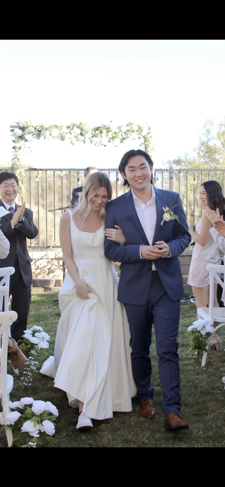
We are a family of five serving with Youth With A Mission in Cambodia, raising our children and making Jesus known.
We’re Naomie and Andrew, parents to Joshua, Tabitha, and Hadassah. We got married in January 2021, and just five months later we moved to Cambodia. What began as the two of us stepping out in faith has grown into a family of five.
Now, with three children—including our youngest, Hadassah, born in June 2026—we are grateful to call Cambodia home as we serve, grow, and follow Jesus together.
Our Journey →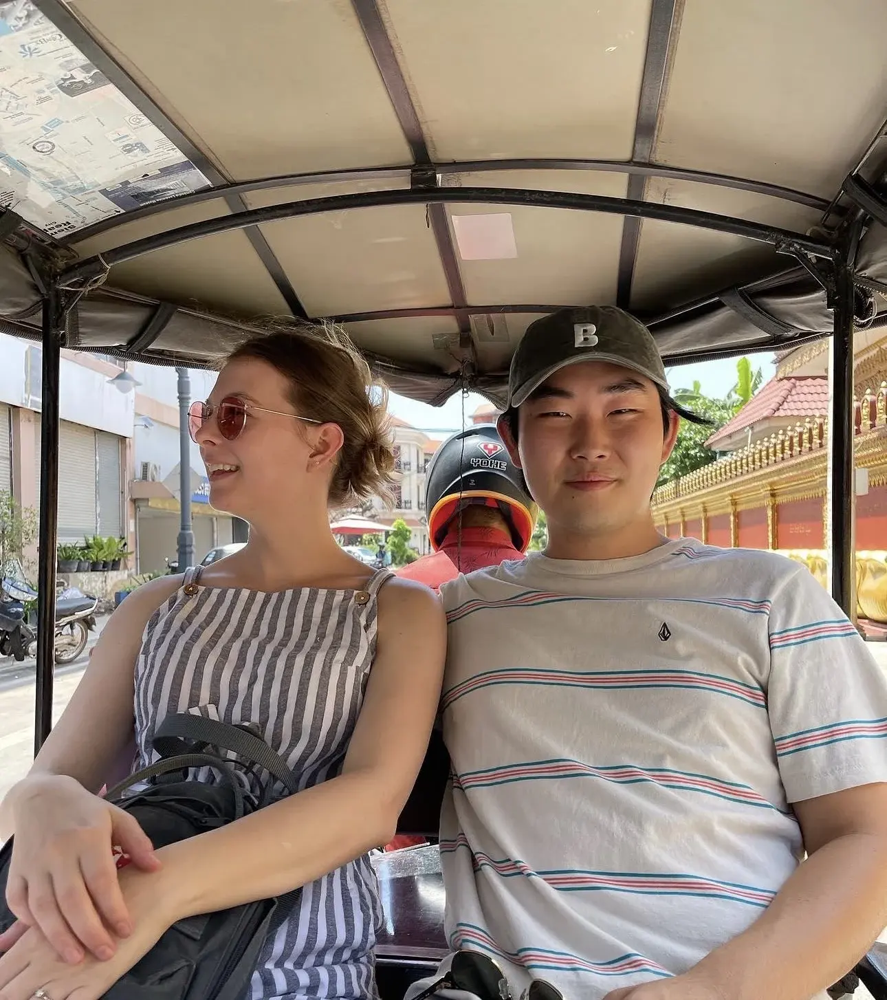
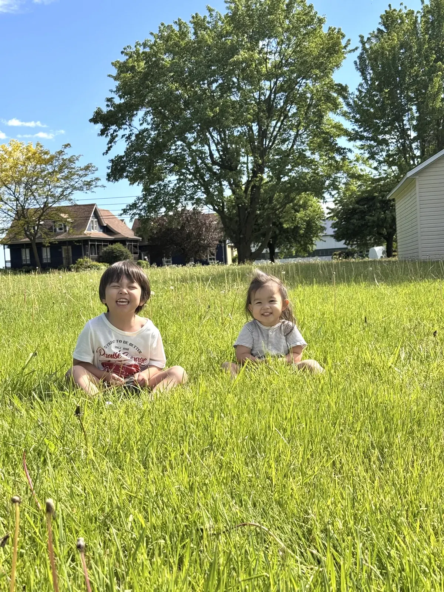
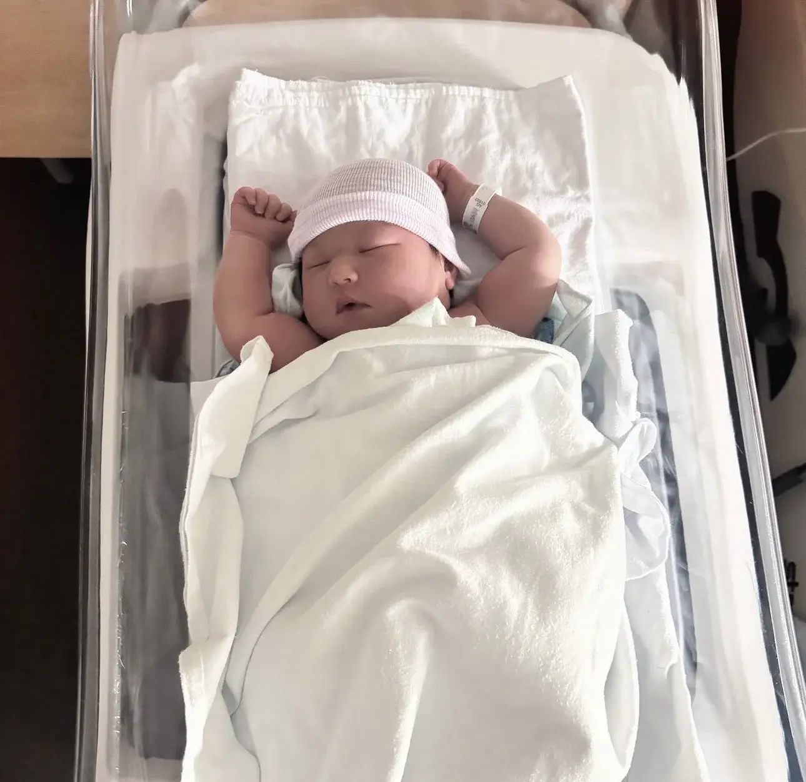
We began our journey together, stepping into a new chapter of faith and family.

We moved to Cambodia in June 2021 and spent our first three years serving with YWAM on the Cambodia–Thailand border.
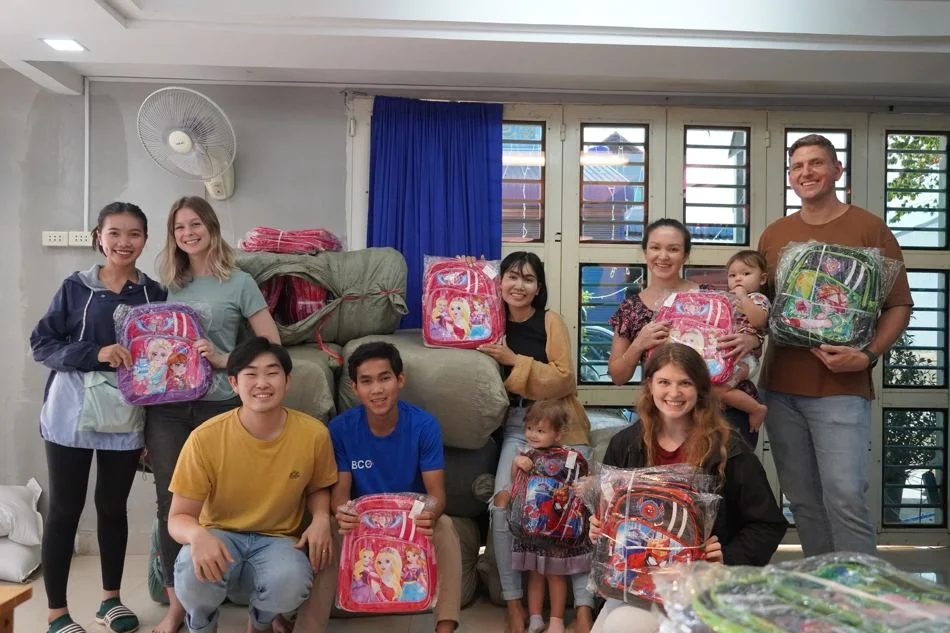
Our family grew with the birth of Joshua, our first child, as we continued building a life and serving in Cambodia.
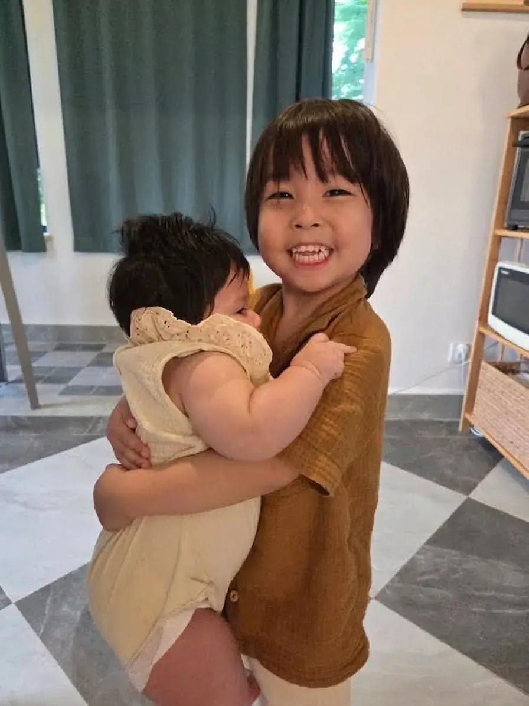
Tabitha joined our family in 2024, bringing new joy to our home and our journey in Cambodia.
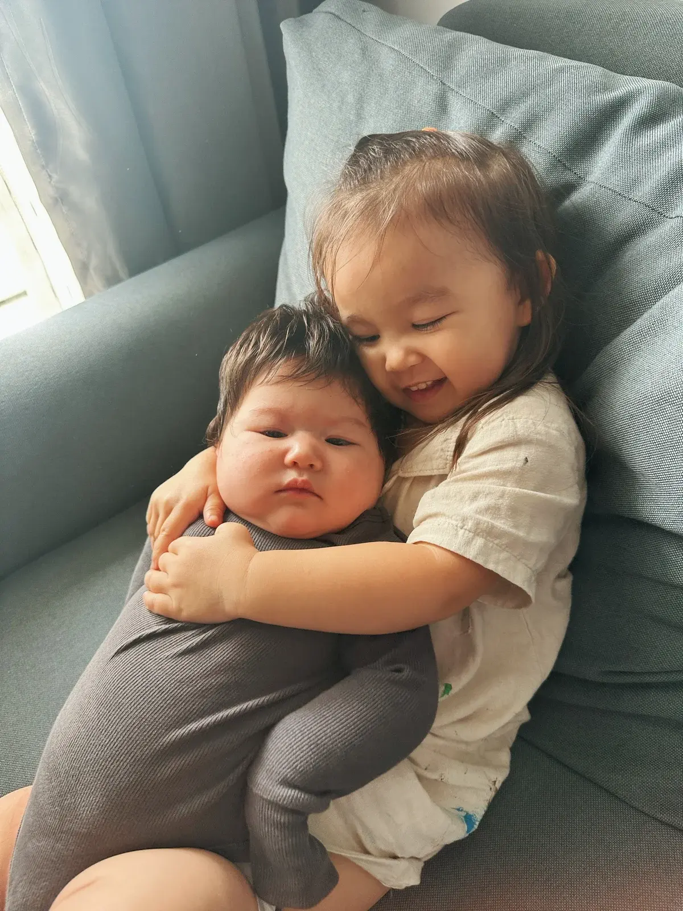
We led a team to pioneer a new YWAM base, building community through discipleship, training, and outreach.
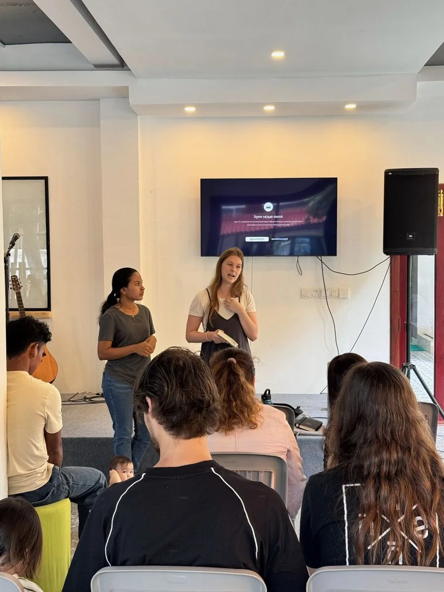
The border conflict became a defining part of our ministry as displaced families arrived in Siem Reap and our teams responded with practical help, prayer, and hope.
Read more →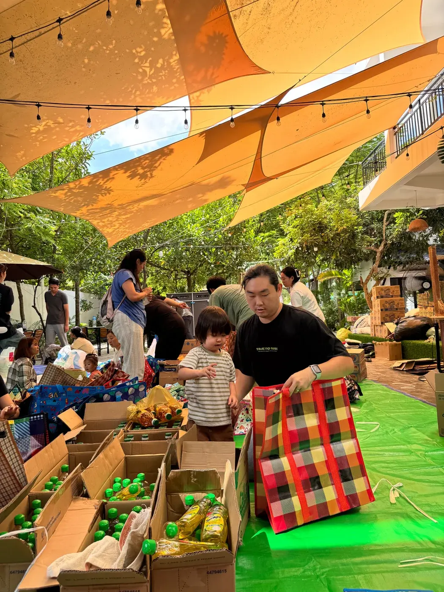
Our newest family member arrived, making us a family of five.
We have extended our commitment to serve in Cambodia for another five years. We’d love for you to walk with us.
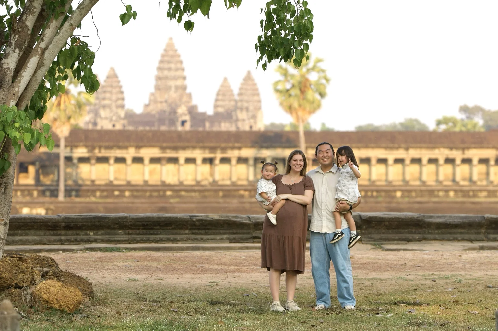
We serve with YWAM Cambodia through discipleship, training, and outreach. Our heart is to see people encounter Jesus and communities transformed through His love.
The Thailand–Cambodia conflict has shaped so much of our ministry this past year. As families fled the border, thousands of people from affected areas came to Siem Reap. We found ourselves responding to urgent needs while preparing for a moment of extraordinary hope.
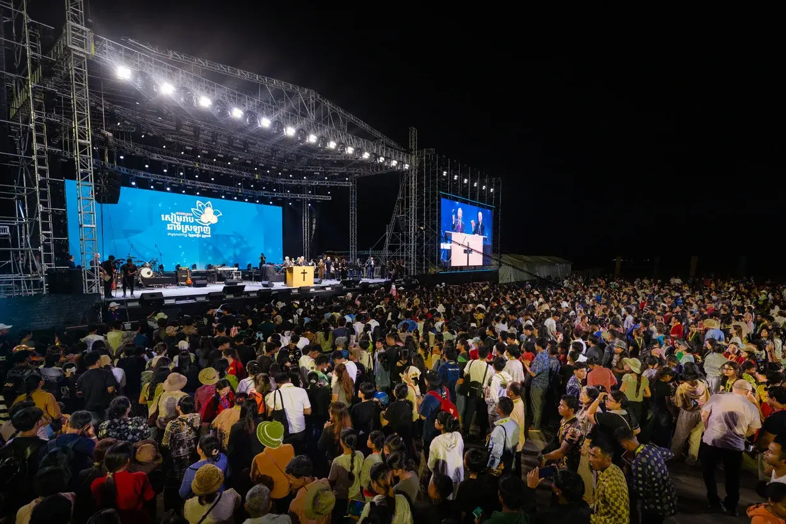
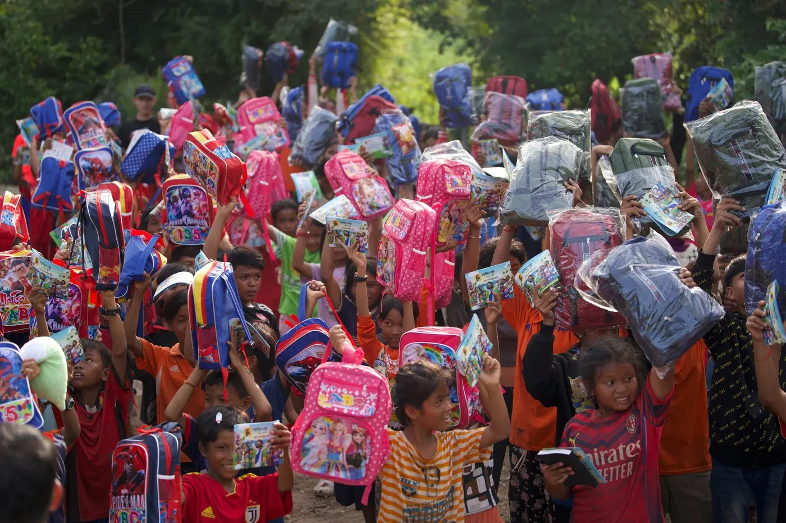
Alongside our teams and partners, we helped respond with food, essential supplies, and support for children in displacement camps. Families had lost safety and stability, and walking alongside them became a central part of our ministry.
In January 2026, Andrew served as Arrangements Chairman for the Billy Graham Evangelistic Association’s Love Siem Reap Festival. He helped coordinate and mobilize over 400 volunteers to facilitate an event where more than 27,000 people gathered to hear the Gospel.
“What the enemy meant for evil, God turned it to good.”
In the midst of real suffering, we witnessed God bringing hope. As displaced families arrived in Siem Reap in the months leading up to the festival, we saw opportunities to serve, build relationships, and share the love of Jesus.
Scroll or use the arrows to follow the story →
As fighting began along the Thailand–Cambodia border, more than 135,000 people were displaced. Relief efforts began with food, essential supplies, and care for affected families.
More than $50,000 was raised toward war relief. Teams prepared care packages for over 2,000 families and backpacks for over 1,000 children.
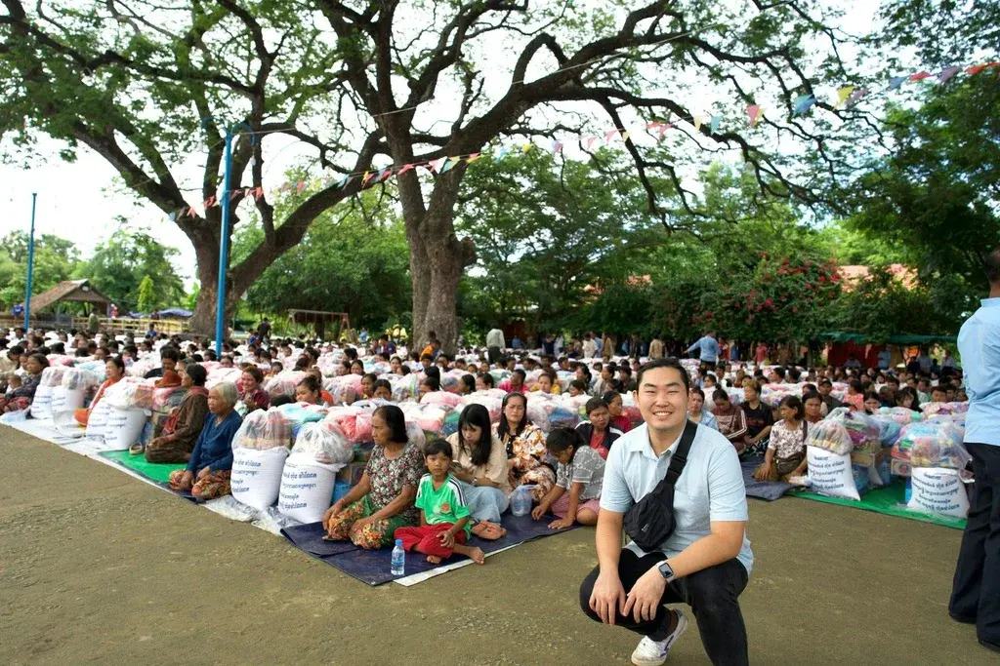
July 28, 2025 · First ceasefireBoth nations declared a ceasefire after days of conflict and displacement.
Thailand broke the ceasefire after a Thai soldier stepped on a land mine, bringing renewed uncertainty to border communities.
Major fighting began and continued for 20 days, displacing many more families and deepening the need for relief.
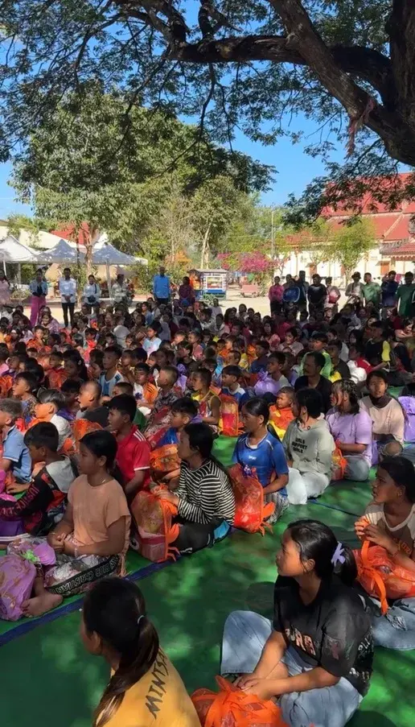
December 23, 2025 · Candlelight ChristmasMore than 3,000 Christians gathered to pray and worship together during the conflict.
Teams distributed 1,500 Christmas presents to children and families affected by the fighting.
A second ceasefire was signed after 20 days of major fighting.
More than 27,000 people gathered to hear the Gospel, including people from communities affected by the conflict. Our presentation records 2,400 responses to the Gospel.
The wider response reached 15 displacement camps, provided food and supplies to over 6,000 families, helped start schools in each location, and hosted nine international outreach teams.
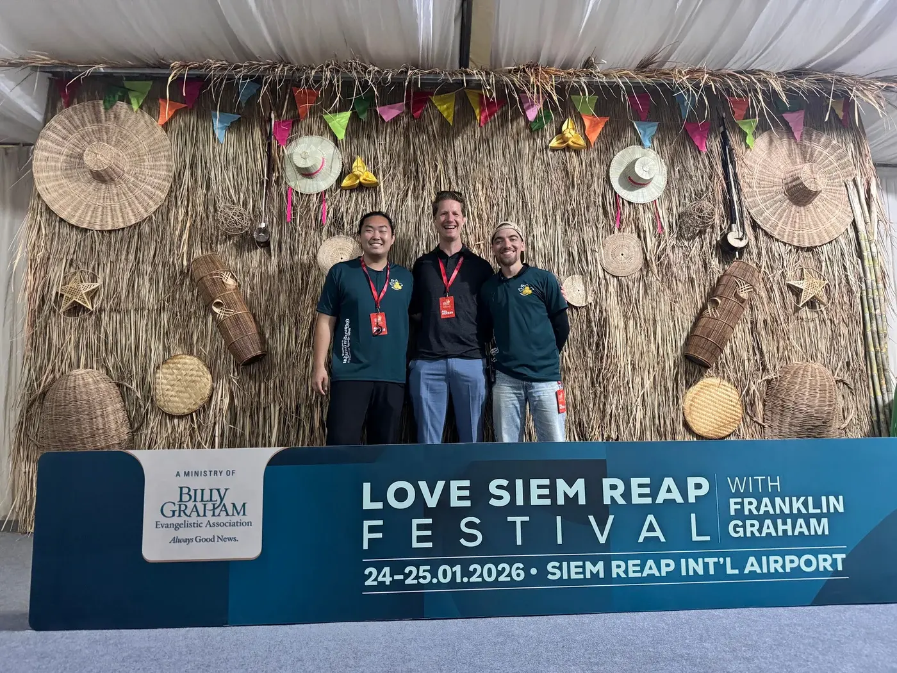
Dates and ministry figures are drawn from our Mission Cambodia presentation shared during our visit home in 2026.
Ministry, family life, and the little moments in between.
A little window into our life and ministry
I’ve been working on the YWAM Siem Reap website! Take a look and get to know the ministry we’re part of.
Explore YWAM Siem Reap ↗ ywamsiemreap.orgFollow Lee Missions for our latest posts and photos.
Posts load from Facebook and may require sign-in. You can always view them on our page.
Visit Lee Missions on Facebook ↗As we step into five more years of serving in Cambodia, your prayers, encouragement, and financial partnership help make this ministry possible. We'd love for you to walk alongside our family.
Explore ways to giveOne-time gifts · Monthly partnership · US & Canadian giving
Read our updates, pray with us, and stay connected to what God is doing in Cambodia.
Have a question, a word of encouragement, or want to connect? Get in touch.